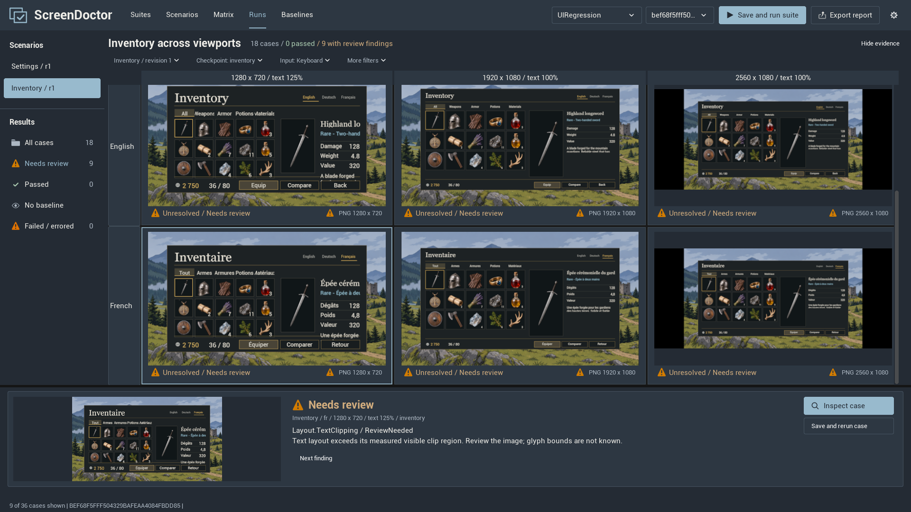
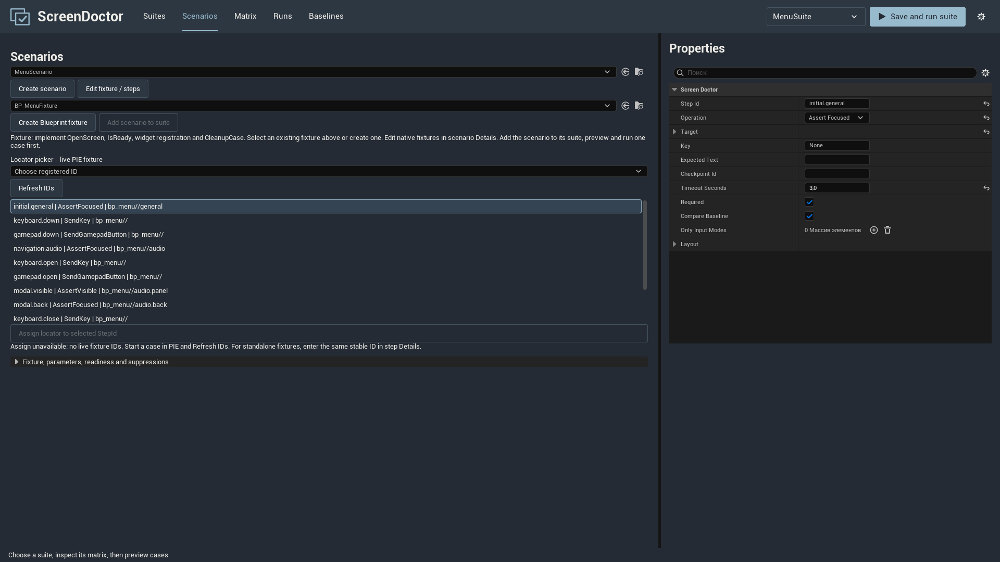
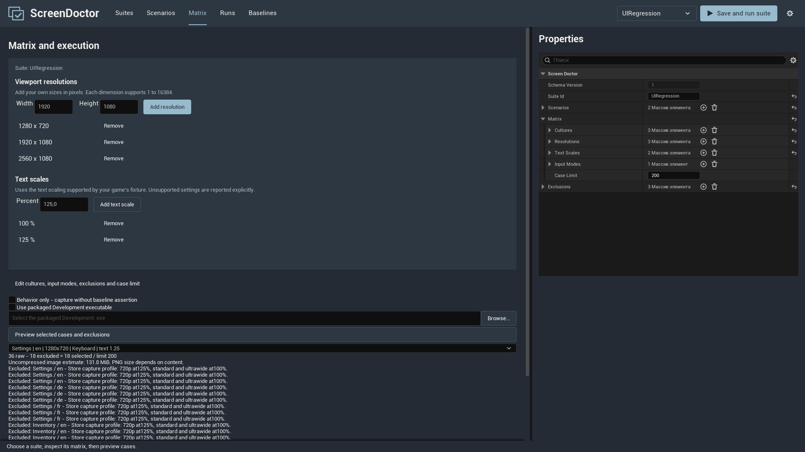
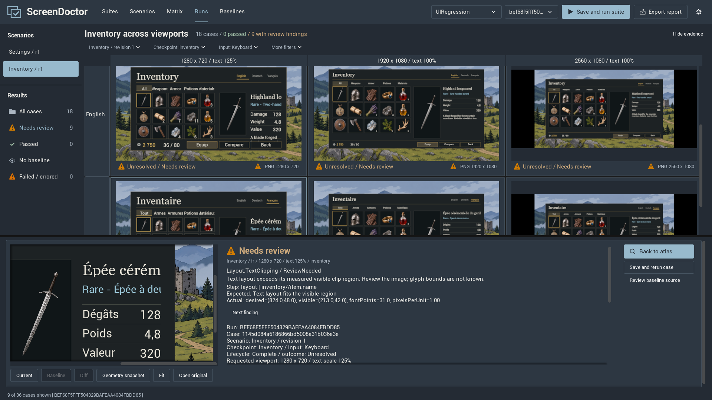
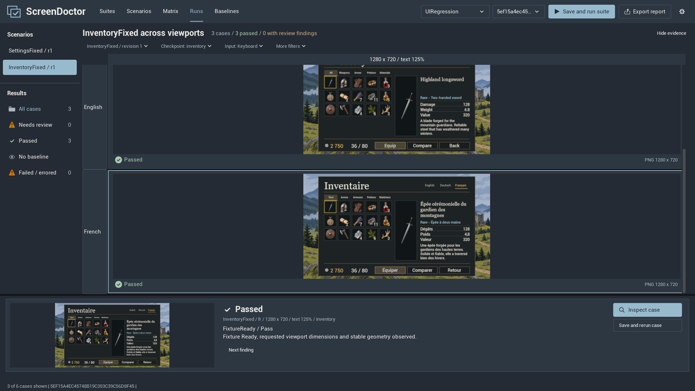

Check your game UI before your players do.
Open the same screen at different viewport sizes, text scales and languages. Compare the images, inspect a clipped caption and repeat the check after you change your layout.
ScreenDoctor 1.0.0 is a UI testing plugin for Unreal Engine 5.5-5.8, Windows 64-bit and UMG. UMG is Unreal's system for menus, buttons and other game screens.

The plugin runs the paths you describe. It does not automatically explore every menu or repair your UI. This guide translates the explanations; English button labels and Blueprint names are kept as they appear in the interface.
Install and open the plugin
Choose the matching engine version
Use the ScreenDoctor package for your Unreal Engine version: 5.5, 5.6, 5.7 or 5.8. In Epic Games Launcher, the version appears below the engine installation in Unreal Engine > Library.
Install through Fab
- Close Unreal Editor. In Epic Games Launcher, open your Fab Library, find ScreenDoctor and install it for the engine version used by your project.
- Open your project. Choose Edit > Plugins, search for ScreenDoctor and enable it if needed. Restart when Unreal asks.
- Choose Tools > ScreenDoctor. The plugin opens as an editor tab.
Install a project ZIP
Your project folder is the folder containing the .uproject file. Create a Plugins folder there if it does not exist. Close Unreal and extract the plugin with exactly this nesting:
MyGame/
MyGame.uproject
Content/
Plugins/
ScreenDoctor/
ScreenDoctor.uplugin
Resources/
Source/After extraction, open the project, enable ScreenDoctor in Edit > Plugins, restart and open Tools > ScreenDoctor. A compiled package also contains Binaries. Install one copy of the plugin, either for the engine or for the project. A source-only package requires a compatible Visual Studio C++ toolchain and Windows SDK, even when your game uses only Blueprints. Use the matching compiled package if you do not want to build source.
If you do not have a project yet
Launch Unreal, choose Games > Blank > Blueprint, name the project and choose Create. Save it in a folder you can find again. Open Content Drawer at the bottom of the editor, or press Ctrl+Space; it holds your game's assets. An asset is a saved item such as a widget or a test scenario.
Your first check, from an empty project
Start with one small screen, one language and one resolution. You do not need C++ to author this example. Keep the editor's own menu and node names in English while following the steps, or use their equivalents in your editor language.
- In Content Drawer, open Content. Right-click in the asset area, choose New Folder and name it
UITests. - In that folder, right-click and choose User Interface > Widget Blueprint. Select User Widget if asked for a parent. Name it
WBP_UIExampleand double-click it. - In Designer, add a Canvas Panel from the Palette if there is no root panel. Add a Text control to it. In the Hierarchy name it
TitleLabel; check Is Variable in Details. Set its text to exactlySettings, font size to32, Canvas position toX=100, Y=100and size to600 x 100. - Add a Button to the Canvas, name it
ContinueButton, enable Is Variable and Is Focusable. Set positionX=100, Y=250and size300 x 70. Add a Text child readingContinue. The Title and Button must be siblings in the Canvas, not children of each other. - Click Compile and Save in the widget editor. Close that asset tab if you need space.
- Follow Connect the widget and Create the scenario below, then return to the next step.
- In Suites, click Create suite and save
DA_UIFirstSuiteinContent/UITests. Click Edit suite properties and setSuiteId = first_ui_suite. In a compact window, use Back to controls after editing properties. In Scenarios, selectDA_UIFirstScenarioand click Add scenario to suite. - In Matrix, use Add resolution to add
1280 x 720, then Remove the initial1280 x 800if present. Keep only that resolution, text scale100%, cultureenand input modeKeyboard. Use Edit cultures, input modes, exclusions and case limit to edit the last two. Use Back to controls after editing properties in a compact window. Leave packaged execution unchecked. - Click Preview selected cases and exclusions, select the one case and click Save and run selected case. The test opens your widget in a separate process. You do not need to press the editor's regular Play button.
- Open Runs, choose the completed result and select its image. Check the five authored steps and the
menu_statecapture. This first scenario captures an image without baseline comparison; it does not yet prove a visual match.
Connect the widget with a fixture
A fixture is a Blueprint based on ScreenDoctorFixture. It creates the screen, registers useful controls and tells ScreenDoctor when the UI is ready. Do not place the fixture in the level or add the fixture itself to the viewport.
Create the asset
- Open Tools > ScreenDoctor > Scenarios. Click Create scenario, save
DA_UIFirstScenarioinContent/UITestsand keep it selected. - Click Create Blueprint fixture, save
BP_UIFixturein the same folder and double-click that asset in Content Drawer. The button assigns the fixture to the scenario; it creates an empty Blueprint, not a working menu. - In the Blueprint's My Blueprint panel, add a variable named
Menu. Set its type toWBP_UIExample Object Reference, then Compile. In the Functions area's Overrides menu, chooseOpenScreen.
OpenScreen: create and return the UI
Right-click in the function graph to find nodes. Connect the white execution pins in order. Create Widget uses class WBP_UIExample and the fixture's Get Player as Owning Player. Store its Return Value in Menu and in inherited RootWidget; enable Show Inherited Variables if RootWidget is hidden.
OpenScreen
Create Widget (Class = WBP_UIExample, Owning Player = GetPlayer)
-> Set Menu = Return Value
-> Set RootWidget = Menu
-> Add to Viewport (Target = Menu)
-> GetRegistry -> Register Widget
Locator: ScreenId = demo_menu, TestId = title, Context = ""
Widget: Menu.TitleLabel
-> GetRegistry -> Register Widget
Locator: ScreenId = demo_menu, TestId = continue, Context = ""
Widget: Menu.ContinueButton
-> Return MenuFor each Register Widget node, connect its Target to Get Registry. Use Make Screen Doctor Locator on the Locator pin, or split that struct pin, and enter its three fields separately. Drag from Menu to get the real TitleLabel or ContinueButton object for Widget. Finally connect Menu to the function's return value. The fixture returns a widget object, not a boolean.
IsReady: wait for the screen
Add the IsReady override. Check Is Valid for Menu with a Branch. If invalid, return false. If valid, return Is In Viewport for Menu. The empty parent returns false, so leaving this function unimplemented causes a readiness timeout.
CleanupCase: remove test state
Add CleanupCase. Right-click its entry node, choose Add Call to Parent Function and connect it, then clear Menu to None. The parent removes RootWidget and resets the registry. Keep CaptureInputState and RestoreInputState at their defaults for this separate-process tutorial. Compile and Save the fixture, then return to the scenario.
Describe what the test should do
Select DA_UIFirstScenario in Scenarios. Set ScenarioId = first_ui, Revision = 1 and confirm that Fixture Class is BP_UIFixture.
- Click Edit fixture / steps to open the scenario's Details. Expand Steps and use the array's + control to add five elements.
- Expand each element. Enter the values below, in order. Leave Required enabled and use positive timeouts; 5 seconds is enough for the first four example steps.
- For a targeted step, expand Target and enter ScreenId and TestId separately. Leave Context empty. For
AnalyzeLayout, add one item under Layout > Targets; it has the same locator fields.
| StepId | Operation | Fields to set |
|---|---|---|
wait.title | WaitForWidget | Target.ScreenId = demo_menu |
visible.title | AssertVisible | Target.ScreenId = demo_menu |
text.title | AssertText | Target.ScreenId = demo_menu |
layout.title | AnalyzeLayout | Layout.Targets[0].ScreenId = demo_menu |
capture.menu | CaptureCheckpoint | CheckpointId = menu_state |
The exact title text Settings must match the Text property you set in the widget. Compare Baseline = false means unchecking that checkbox on the capture step. Later, turn it on when you are ready to approve a baseline.
Selecting a step in the left-hand list opens its typed editor. Each StepId must be unique. After renaming, deleting or duplicating a step, select the intended step again. Keep the same IDs for the same purpose; increase the scenario Revision when deliberately changing the test contract.

If the compact editor is showing Details, click Back to controls. Now return to Your first check, create the suite and run one case before expanding the matrix.
Find widgets with stable IDs
A locator is a stable address for a widget. It is made from three separate fields:
| Field | Example | Meaning |
|---|---|---|
ScreenId | demo_menu | Which screen owns the control. |
TestId | title | Which control on that screen. |
Context | empty, or item:42 | Optional identity for a repeated list item. |
Register these fields with the actual widget reference when the fixture opens the screen. Do not put demo_menu/title into TestId as one string. Translated captions, pixel coordinates and child indexes are not stable IDs.
For the first tutorial, type the IDs directly into the scenario. Refresh IDs and Assign locator to selected StepId use the registry of an active ScreenDoctor fixture in PIE. Normal Play does not create that fixture or scan every game widget.
If two different live widgets share the same locator, the result is ambiguous; give them distinct IDs or Context values. For a virtualized inventory list, your adapter must scroll to and realize the item before registering its entry widget. An item not yet created is not proof of a broken UI.
Choose resolutions, languages and text sizes
Open Matrix with your suite selected. There is no three-resolution limit. Add the viewport sizes you need, including 4K, ultrawide or portrait layouts.
- Under Viewport resolutions, enter integer Width and Height, then click Add resolution. Each dimension supports 1 to 16384. Click Remove beside a size to delete it. Keep at least one valid size.
- Under Text scales, enter a percentage such as
125and click Add text scale. Remove unwanted scales beside their rows. The percentage field uses 125; the raw TextScales property stores 1.25. - Click Edit cultures, input modes, exclusions and case limit. Add cultures such as
en,deandfr; add the input modes that your screen supports. Your game must already contain translations and the required fonts. Selecting a culture does not translate game text. - Preview the plan again. Every scenario is combined with every chosen resolution, culture, scale and input mode, then exclusions are applied. Two resolutions, three cultures and two scales for one scenario and input mode create 12 cases.
- Start with a selected case, then use Save and run suite. More than 20 selected cases requires confirmation of the estimate. Case Limit controls the plan; exclusions intentionally omit combinations.

Make text scale affect your actual UI
The fixture must implement ApplyTextScale. Its default accepts 1.0 only. Create a float RequestedScale in BP_UIFixture with default 1.0. Override ApplyTextScale: for Scale > 0 and Scale <= 3, set RequestedScale to Scale and return true; otherwise return false. This example supports that range. The callback runs before OpenScreen, so Menu does not exist yet.
In the fixture's OpenScreen, after setting Menu and before Add to Viewport, get Menu.TitleLabel, then Get Font. Connect its output to Break Slate Font Info and add Make Slate Font Info. Connect the corresponding existing font fields from Break to Make: Font Family (Font Object), Typeface (Typeface Font Name), material, outline and any other exposed settings. For Size only, use Round(32 * RequestedScale) instead of the old size. Connect Make's result to Set Font on Menu.TitleLabel, including the white execution pins. Search for Slate Font Info by dragging from the font pin if needed. This minimal extension scales the title; repeat the policy for other text controls or call your real game setting. Always multiply a saved base size, not an already scaled size.
Read results in Runs
- Open Runs and choose a finished run in the top selector.
- Choose a scenario in the left rail, then a checkpoint and input mode. Columns show viewport/text-scale configurations; rows show cultures.
- Use All cases, Needs review, Passed or More filters to narrow the view. Planned exclusions can be counted in the unfiltered atlas; they are not executed test cases.
- Select a cell and click Inspect case. Use Next finding to read individual checks, the target locator, Expected and Actual.
- Use 100% for readable pixels, scroll the image and return with Fit. Open original opens the image file. Geometry snapshot is separate measured evidence, not an overlay matched to every captured pixel.
| Status | What it means | What to do |
|---|---|---|
| Passed | The required checks for that case passed. | Read optional findings too. |
| Needs review / ReviewNeeded | A measured condition needs inspection, for example text beyond its clip region. | Inspect the exact widget and image. |
NoBaseline | No compatible approved reference image is available. | Review and explicitly approve a correct reference. |
| Failed | An authored assertion did not hold. | Read Expected, Actual and the failing step. |
Error / Errored | Setup, execution, storage or another infrastructure operation failed. | Read the reason and process log. |
Unsupported | The requested capability is unavailable. | Implement the needed adapter or choose a supported setting. |
Complete | Execution finished; this is a lifecycle state. | Check the outcome separately; Complete does not mean Passed. |
Save and rerun case uses the currently saved matching scenario and configuration. A changed frozen test contract can require a new plan. Export report copies a shareable report bundle. Keep the entire folder, including images, rather than sharing only its HTML file.
Understand clipping and layout findings
AnalyzeLayout examines registered targets, or all registered widgets when no target list is given. It can flag clipping candidates, overlaps and small font metrics. Add a CaptureCheckpoint near the analysis step so you can inspect the real UI.

Desired is the text layout's requested size; visible is the measured available clip region. If a description needs 84 pixels of height but has only 46, it may be flagged even at 1920 x 1080. A large monitor does not fix a small text box.
These are review candidates, not an OCR reading of every glyph or a guarantee that every overlap is wrong. Inspect decorative layering, scrolling regions and intentionally truncated captions before changing your UI.
- Open the exact case and target. Confirm the language, resolution and text scale.
- Check the original image and your widget's layout. Consider wrapping, the container's size, anchors, padding or a deliberate shorter label.
- Compile and save the change, then rerun the same configuration and compare other affected configurations.
- If a finding is intentional, add a narrowly scoped suppression in scenario settings with RuleId, locator, applicable dimensions and a useful Reason. Keep the finding and its reason traceable.

Custom-drawn content, rich text and unrealized list entries can need explicit project adapters. An unsupported check is not a passing check.
Approve a reference image and compare again
A baseline is an image you have deliberately approved as the correct reference for one configuration. A capture without comparison is useful evidence, but it is not a visual regression assertion.
- In the scenario's capture step, enable Compare Baseline. Compile/save the UI and fixture and save the scenario. Return to Matrix, click Preview selected cases and exclusions, select the refreshed case and use Save and run selected case. Do not rerun the old frozen case from Runs after changing the scenario contract. Its first visual comparison normally reports
NoBaseline. - In Runs, inspect that exact captured image, then choose Review baseline source. Alternatively, open Baselines, click Refresh completed runs and select the completed original case and
menu_statecheckpoint. - Click Review checkpoint if needed. Inspect Current at full size using Open original or Comparison report. Confirm the source identity, culture, resolution and scale.
- Enter a reviewer name, check the thresholds and click Approve reviewed image only if the image is correct. If the source changed since review, inspect the new source first.
- Run the same case again. A compatible approved image is now available for comparison. Review Current, Baseline and Diff if the check reports a difference.
Approval is separate from running a test. Each culture, resolution, scale, input mode and compatible rendering profile needs its own matching reference. Changing the engine version, scenario revision or rendering/font profile can require a new review instead of reusing an unrelated image.
Thresholds and animated regions
The default Channel tolerance is 8; Allowed changed fraction is 0.0005, meaning 0.05% of unmasked pixels. Do not raise thresholds just to hide a defect. Under Advanced source and masks, an optional JSON file can exclude a deliberately changing region:
{"schemaVersion":1,"masks":[{"name":"clock","reason":"Animated clock","x":30,"y":20,"width":160,"height":40}]}Mask coordinates are screenshot pixels. Give each mask a name and reason; the whole image cannot be masked. Keep approved baseline files with your project's reviewed assets.
Check keyboard, gamepad and modal behavior
The first tutorial checks a static screen. For interaction, make the actual buttons focusable and define their navigation and normal OnClicked behavior in your widget. Set the player's input mode and initial focus when opening the screen.
| Operation | Use |
|---|---|
FocusWidget | Put focus on a known starting control. This alone does not test navigation. |
SendKey | Route a key such as Down, Enter or Escape to the owned focused UI. |
SendGamepadButton | Route Gamepad_DPad_Down or Gamepad_FaceButton_Bottom. |
ClickWidget | Click a registered control through the supported input route. |
AssertFocused | Check which registered control received focus. |
AssertNoModal | Check your fixture's explicit modal observer. |
For a navigation test, set explicit Down/Up navigation between buttons, send a key, then assert the expected focus. Do not call a button's OnClicked from the fixture to pretend that navigation worked. SendKey and SendGamepadButton use the current focus, not a Target locator.
For modal checks, override both SupportsModalObservation to return true and HasOpenModal to return your real modal-open boolean. Update that boolean through the widget's normal open/close flow. Use OnlyInputModes on steps to keep Keyboard and Gamepad routes separate.
PIE means Play In Editor. In-process tests require a complete, game-owned CaptureInputState/RestoreInputState adapter. If you do not have one, use the separate-process run instead of guessing how to restore your game's input policy. Software gamepad routing does not require a physical controller; hardware-specific behavior is a separate concern.
Run suites and keep reports
You can run the same saved assets from PowerShell, for example in a build job. Open a terminal in your project folder and replace the sample project and engine paths below with your own. For an engine-installed plugin, use that plugin's Scripts directory instead of the project-relative path.
$project = 'D:\Games\MyGame\MyGame.uproject'
$engine = 'D:\Epic\UE_5.8'
.\Plugins\ScreenDoctor\Scripts\Run-ScreenDoctorSuite.ps1 -ProjectFile $project -EngineRoot $engine -SuiteAsset '/Game/UITests/DA_UIFirstSuite.DA_UIFirstSuite' -Mode EditorStandalone/Game/UITests/DA_UIFirstSuite.DA_UIFirstSuite is the object path for the suite created in this guide, not a Windows file path. Use your actual suite path if you renamed it. Scripts are included in the ScreenDoctor plugin's Scripts folder.
| Exit code | Meaning |
|---|---|
| 0 | All selected required checks passed; predeclared optional or suppressed findings may remain. |
| 1 | At least one assertion failed, without a higher-priority error. |
| 2 | Configuration, execution or storage error, including an empty selected plan. |
| 3 | Unresolved required review, missing baseline, unsupported/skipped check, cancellation or incomplete execution. |
Reports include HTML for people, JSON for full details and JUnit for build tools. Normal history is under <Project>/Saved/ScreenDoctor; approved images normally live under <Project>/ScreenDoctor/Baselines. Keep the complete report bundle so images and relative links remain available.
Cancel owned queue stops the plugin's current queue and preserves available partial evidence. Retention is opt-in: the Clear-ScreenDoctorHistory.ps1 script previews eligible history before its explicit -Apply deletion. Keep baseline roots separate and do not delete approved images as ordinary run history.
Use a real GPU rendering session for captures. A NullRHI job cannot produce the game UI image. Text and screenshot content stay in the local execution/report workflow; this plugin does not require an online analysis service.
Check a packaged Development game
A packaged game runs outside the editor. Use a Development build when you need ScreenDoctor's test runner; Shipping and Test builds exclude that runner.
- In Edit > Project Settings > Packaging, select the maps and cultures your test needs.
- Add the folder containing the fixture Blueprint, widget, scenario and suite to Additional Asset Directories to Cook when those assets are not otherwise referenced. For this tutorial, that folder is
/Game/UITests. Cooking prepares assets for the packaged game; content available in the editor is not automatically included everywhere. - Package the Win64 game in Development with the toolchain required by your Unreal installation.
- In ScreenDoctor's Matrix, enable Use packaged Development executable, click Browse... and choose the actual Development game
.exe. - Preview and run one case. Verify its viewport, culture and artifacts before running the full suite.
If a packaged UI has no translation or font, include that language's localized content and font assets in the build. The guide supports UE 5.5-5.8; use the matching plugin and engine package throughout a run and baseline review.
When something does not work
| Symptom | Check this first |
|---|---|
| ScreenDoctor is missing from Tools. | Enable it in Edit > Plugins, restart and check that the plugin package matches your engine. Confirm the ScreenDoctor.uplugin folder nesting. |
| The editor reports missing modules. | Use matching compiled binaries or build source with the required C++ toolchain. Do not keep duplicate engine/project installations. |
| Run is disabled or the plan is empty. | Select a suite, add the scenario to it, assign its fixture and steps, and keep at least one value in every Matrix axis. Read the disabled-button reason. |
| The screen does not open or readiness times out. | Implement OpenScreen and IsReady. Return Menu, set RootWidget, Add to Viewport, then Compile and Save both Blueprints. |
| The target cannot be found. | Match ScreenId, TestId and Context exactly; register the actual live widget. Check duplicate IDs and when a list item is realized. |
| 125% is Unsupported or the UI stays the same size. | Implement ApplyTextScale. Store the value before OpenScreen and apply it after Create Widget. Start with 100% until this is connected. |
| A language changes in the report but the text does not. | Your game needs gathered/localized FText or string-table content, translations and fonts. The Matrix culture is not a translation service. |
| The first capture is NoBaseline. | This is expected for a new comparison key. Inspect the correct image, explicitly approve it and repeat that same case. |
| A large screen still needs review. | Inspect the exact text container. Its width or height can be too small even when the viewport is large. |
| A baseline/diff image button is disabled. | That artifact is not available for this case. Review the comparison status; no neighboring image is substituted. |
| No image is produced or storage fails. | Check GPU rendering, free space, writable report locations and the reported error. Keep any recovery bundle and process log. |
| Focus or modal assertions are Unsupported. | Implement the appropriate observation/input adapter; do not change an unsupported check into a passing result. |
Common questions
Can I check more than three resolutions?
Yes. Add and remove your own sizes in Matrix. The three columns in the examples are a selected profile, not a plugin limit.
Does 125% change Windows display scaling?
No. It requests the text scale implemented by your fixture or game settings. Physical monitor DPI is separate.
Does installation automatically connect every game screen?
No. Connect each screen or reusable screen family with a fixture, stable widget IDs and authored scenario steps. The tutorial starts with one small widget.
Is Needs review the same as a confirmed bug?
No. Inspect the image and measurements. A deliberate clip or decorative overlap may be correct for your design.
Will running again approve the image?
No. Baseline approval requires a separate review and the explicit Approve reviewed image action.
Are the fantasy UI and tutorial assets part of the plugin?
The fantasy screen shown in images is a separate illustration project. The small UMG tutorial is created by following this guide; installing the plugin alone does not create those game assets.
Do I need an account or a cloud analysis service?
ScreenDoctor runs the checks locally through Unreal and writes local report bundles. It does not require an external analysis account.
Terms, tabs and useful information
| Term or tab | Meaning |
|---|---|
| Suites | Select/create a suite and manage its scenario members. |
| Scenarios | Select a fixture and author individual steps. |
| Matrix | Choose configurations, preview the plan and run cases. |
| Runs | Compare captures and inspect checks for each case. |
| Baselines | Review and explicitly approve reference images. |
| Fixture | Your adapter for opening, observing and cleaning up a screen. |
| Case | One scenario under one culture/resolution/scale/input combination. |
| Checkpoint | A named CaptureCheckpoint step that saves an image. |
| Revision | A version of the scenario contract, separate from the plugin version. |
| Blueprint / Compile / Save | Unreal's visual scripting asset; Compile updates its executable graph and Save writes the asset. |
ScreenDoctor 1.0.0. Unreal Engine 5.5-5.8. Windows 64-bit, UMG and SDR capture. Keep the matching engine/plugin version when moving a project. For help, include the plugin and engine versions, a short reproduction and the complete report bundle. Review images and paths before sharing private project information.
You can search chapters from the sidebar, press Ctrl+K to focus search, or use Print guide to save this language as a PDF through your browser. Switching the guide language keeps the current chapter; it does not change the game or editor language.